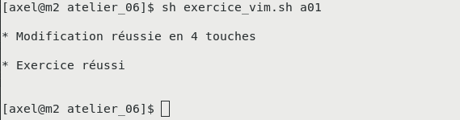

ATELIER #7: VIM et les fichiers de configuration (À MODIFIER)
Objectif de l’atelier
- Approfondir l’utilisation de VIM pour modifier des fichiers de configuration Linux de manière efficace.
- Modifier des fichiers de configuration Linux efficacement :
- Utiliser un minimum de touches.
- Ne pas utiliser la souris.
- Compléter les exercices :
- 10 exercices de type A (le curseur est déjà placé).
- 5 exercices de type B (le curseur commence au début du fichier).
Instructions de remise
-
Fournissez les captures d’écran des exercices réussis via Moodle.
-
Chaque capture doit montrer :
- La modification effectuée.
- Le fichier sauvegardé dans l’état final.
-
Exemple de capture attendue :

-
Une vidéo de démonstration est disponible :
Atelier
Préparation
Installation des outils
-
Créez un fichier
vim.shavec le contenu suivant :#!/bin/bash wget https://linuxh25.netlify.app/semaine7/atelier/vimrc.dot || echo ERREUR mv vimrc.dot ~/.vimrc sudo yum install -y epel-release sudo yum install -y meld sudo yum groupinstall -y "Development Tools" sudo yum install -y git automake mkdir ~/tmp cd ~/tmp git clone https://github.com/kernc/logkeys.git cd logkeys ./autogen.sh cd build ../configure make sudo make install || echo ERREUR -
Exécutez le script pour installer les outils requis :
$ bash vim.sh
Téléchargement des exercices
-
Dans votre répertoire personnel, exécutez les commandes suivantes :
$ cd ~ $ wget https://linuxh25.netlify.app/semaine7/atelier/atelier_07.tar.gz || echo ERREUR $ tar zxvf atelier_07.tar.gz $ cd atelier_07
Exercices de type A (curseur déjà placé)
Exercice a01
Fichier de configuration
/etc/default/grub
Modification à apporter
-
Avant :
GRUB_CMDLINE_LINUX="rd.lvm.lv=centos/root rd.lvm.lv=centos/swap rhgb quiet" -
Après :
GRUB_CMDLINE_LINUX="rd.lvm.lv=centos/root rd.lvm.lv=centos/swap quiet"Supprimez
rhgbpour désactiver le démarrage graphique.
Performances attendues
| Record à battre | Maximum acceptable |
|---|---|
| 4 touches | 9 touches |
Commandes pour lancer l’exercice
$ sh afficher_objectif.sh a01
$ sh exercice_vim.sh a01Exercice a02
Fichier de configuration
/etc/selinux/config
Modification à apporter
-
Avant :
SELINUX=enforcing -
Après :
SELINUX=disabledDésactivez SELinux.
Performances attendues
| Record à battre | Maximum acceptable |
|---|---|
| 7 touches | 25 touches |
Commandes pour lancer l’exercice
$ sh afficher_objectif.sh a02
$ sh exercice_vim.sh a02Répétez cette structure pour les autres exercices.
Exercices de type B (curseur au début du fichier)
Exercice b01
Fichier de configuration
/etc/ssh/sshd_config
Modification à apporter
-
Avant :
#X11Forwarding yes -
Après :
X11Forwarding yesDécommentez la ligne pour activer la redirection graphique.
Performances attendues
| Record à battre | Maximum acceptable |
|---|---|
| 7 touches | 18 touches |
Commandes pour lancer l’exercice
$ sh afficher_objectif.sh b01
$ sh exercice_vim.sh b01Continuez avec cette structure pour les exercices restants.
=====================================================
Atelier 7b: vim avancé
Cet atelier et l’atelier précédent forment l’atelier 7.
Objectif
- Effectuer efficacement des modifications à des fichiers de configuration Linux
- NOTE: efficacement veut dire en moins de X touches, sans utiliser la souris
- Vous devez réussir:
- 10 exercices de type A (curseur déjà placé)
- 5 exercices de type B (curseur au début du fichier)
Remise
-
À remettre sur Moodle: Les captures d’écran:
-
Chaque capture d’écran correspond à un exercice réussi, p.ex:
- Voici un exemple d’exercice réussi:
 -
Voici comment l’exercice ci-haut s’est déroulé:
Astuces:
Utilisez ZZ pour sauvegarder et quitter dans vim.
Utilisez les commandes données dans les images Aide mémoire en fin du cours pour avoir le record.
Travail à effectuer
Préambule
Installation des outils nécessaires
Copiez le texte suivant dans un script nommé vim.sh
#!/bin/bash
wget http://gyoukou.ca/vimrc.dot || echo ERREUR
mv vimrc.dot ~/.vimrc
sudo yum install -y epel-release
sudo yum install -y meld
sudo yum groupinstall -y "Development Tools"
sudo yum install -y git automake
mkdir ~/tmp
cd ~/tmp
git clone https://github.com/kernc/logkeys.git
cd logkeys
./autogen.sh
cd build
../configure
make
sudo make install || echo ERREURExécutez le script :
$ bash vim.sh
Télécharger et décompresser les exercices
# IMPORTANT: cd ~ pour aller dans votre répertoire ~ $ cd ~ $ wget http://gyoukou.ca/atelier_06.tar.gz || echo ERREUR $ tar zxvf atelier_06.tar.gz $ cd atelier_06
Exercices A: le curseur est déjà placé
IMPORTANT: ne pas éditer directement les vrais fichiers de configuration. Editer plutôt la copie qui se trouve dans le dossier atelier téléchargé
Exercice a01
Fichier de configuration
/etc/default/grub
- Configuration de
grub(outil de démarrage) - En particulier: options à donner au noyau Linux au démarrage
Modification à apporter
AVANT:
1GRUB_CMDLINE_LINUX="rd.lvm.lv=centos/root rd.lvm.lv=centos/swap rhgb quiet"APRÈS:
1GRUB_CMDLINE_LINUX="rd.lvm.lv=centos/root rd.lvm.lv=centos/swap quiet"- Enlever
rhgbdésactive le démarrage graphique au profit de l’affichage d’un log - (
rhgbsignifie Red Hat Graphical Boot)
Nombre de touches
| Record à battre | Maximum acceptable |
|---|---|
| 4 touches | 9 touches |
Pour visualiser avec meld et lancer l’exercice
$ sh afficher_objectif.sh a01 $ sh exercice_vim.sh a01
Exercice a02
Fichier de configuration
/etc/selinux/config
- selinux est un pare-feu d’application qui permet de contrôler ou limiter un grand nombre d’opérations sur un serveur Linux
- (selinux veut dire Security Enhanced Linux)
Modification à apporter
AVANT:
1SELINUX=enforcingAPRÈS:
1SELINUX=disabled- On déscative selinux (généralement préférable sur une machine usager)
Nombre de touches
| Record à battre | Maximum acceptable |
|---|---|
| 7 touches | 25 touches |
Pour visualiser avec meld et lancer l’exercice
$ sh afficher_objectif.sh a02 $ sh exercice_vim.sh a02
Exercice a03
Fichier de configuration
/etc/fstab
- Liste des partitions utilisées dans le système
- Par défaut, chaque partition est montée au démarrage
Modification à apporter
AVANT:
1/dev/mapper/centos-tmp /tmp xfs defaults 0 0APRÈS:
- En retirant une ligne, on efface la définition d’une partition
- Le répertoire
/tmpdevient un sous-répertoire de/(partitioncentos-root)
Nombre de touches
| Record à battre | Maximum acceptable |
|---|---|
| 4 touches | 6 touches |
Pour visualiser avec meld et lancer l’exercice
$ sh afficher_objectif.sh a03 $ sh exercice_vim.sh a03
Exercice a04
Fichier de configuration
/etc/locale.conf
- Régionalisation du système: langue, date, etc.
Modification à apporter
AVANT:
1LC_TIME=""APRÈS:
1LC_TIME="fr_CA.UTF-8"- On veut copier
fr_CA.UTF-8entre les"afin de définir aussi le format de date
Nombre de touches
| Record à battre | Maximum acceptable |
|---|---|
| 8 touches | 18 touches |
Pour visualiser avec meld et lancer l’exercice
$ sh afficher_objectif.sh a04 $ sh exercice_vim.sh a04
Exercice a05
Fichier de configuration
/etc/mime.types
- Définition des types de fichier et de leur extensions
- NOTE: la commande
fileaffiche le type d’un fichier
Modification à apporter
AVANT:
1application/3gpp-ims+xml
2application/activemessage
3application/andrew-insetAPRÈS:
1application/3gpp-ims+xml inconnu
2application/activemessage inconnu
3application/andrew-inset inconnu- On ajoute l’extension
inconnupour les trois premiers types de fichier - NOTE: il y a trois tabulations entre le type et l’extension
Nombre de touches
| Record à battre | Maximum acceptable |
|---|---|
| 18 touches | 40 touches |
Pour visualiser avec meld et lancer l’exercice
$ sh afficher_objectif.sh a05 $ sh exercice_vim.sh a05
Exercice a06
Fichier de configuration
/etc/hosts
- Associe un nom réseau à son adresse
- Pour ces noms, le système ne fera pas de requête DNS
- (aussi avantageux pour faire des tests)
- NOTE: ce fichier existe aussi en Windows
Modification à apporter
AVANT:
1206.167.24.30 ciboulot.ca
2#172.17.0.30 ciboulot.ca
APRÈS:
1#206.167.24.30 ciboulot.ca
2172.17.0.30 ciboulot.ca- On met en commentaire l’adresse publique de
ciboulot.ca - On active l’adresse locale (seulement valide au Collège)
Nombre de touches
| Record à battre | Maximum acceptable |
|---|---|
| 6 touches | 12 touches |
Pour visualiser avec meld et lancer l’exercice
$ sh afficher_objectif.sh a06 $ sh exercice_vim.sh a06
Exercice a07
Fichier de configuration
/etc/firewalld/direct.xml
- Règles de pare-feu directes (écrites à la main)
- NOTE: l’autre option est de générer les règles via la commande
firewall-cmd
Modification à apporter
AVANT:
1 <rule priority="0" table="filter" ipv="ipv4" chain="FORWARD">-i PRIVE -o PUBLIC -j ACCEPT</rule>
2 <rule priority="0" table="filter" ipv="ipv4" chain="FORWARD">-i PUBLIC -o PRIVE -m state --state RELATED,ESTABLISHED -j ACCEPT</rule>
3 <rule priority="0" table="nat" ipv="ipv4" chain="POSTROUTING">-o PUBLIC -j MASQUERADE</rule>APRÈS:
1 <rule priority="0" table="filter" ipv="ipv4" chain="FORWARD">-i 192.168.1.4 -o 10.33.50.3 -j ACCEPT</rule>
2 <rule priority="0" table="filter" ipv="ipv4" chain="FORWARD">-i 10.33.50.3 -o 192.168.1.4 -m state --state RELATED,ESTABLISHED -j ACCEPT</rule>
3 <rule priority="0" table="nat" ipv="ipv4" chain="POSTROUTING">-o 10.33.50.3 -j MASQUERADE</rule>- On insère des vraies adresses IP à partir d’un patron
- NOTE: ces règles indique au système de faire du NAT
Nombre de touches
| Record à battre | Maximum acceptable |
|---|---|
| 37 touches | 120 touches |
Pour visualiser avec meld et lancer l’exercice
$ sh afficher_objectif.sh a07 $ sh exercice_vim.sh a07
Exercice a08
Fichier de configuration
~/.bashrc
- Personnalisation du SHELL
- Fichier lu à chaque ouverture du SHEL
Modification à apporter
AVANT:
APRÈS:
1alias la="ls -a"- On ajoute la ligne pour créer un alias
- NOTE: un alias est un raccourci pour une commande fréquemment utilisée.
Nombre de touches
| Record à battre | Maximum acceptable |
|---|---|
| 12 touches | 22 touches |
Pour visualiser avec meld et lancer l’exercice
$ sh afficher_objectif.sh a08 $ sh exercice_vim.sh a08
Exercice a09
Fichier de configuration
/etc/resolv.conf
- Le ou les serveur DNS à utiliser
Modification à apporter
AVANT:
1nameserver 10.33.50.1APRÈS:
1nameserver 192.168.1.1- On change l’adresse DNS à
192.168.1.1
Nombre de touches
| Record à battre | Maximum acceptable |
|---|---|
| 14 touches | 35 touches |
Pour visualiser avec meld et lancer l’exercice
$ sh afficher_objectif.sh a09 $ sh exercice_vim.sh a09
Exercice a10
Fichier de configuration
/etc/ssh/sshd_config
- Configuration du serveur SSH
Modification à apporter
AVANT:
1#X11Forwarding yes
APRÈS:
1X11Forwarding yes- Certaines options sont déjà inscrites au fichier.
- Pour les activer, il suffit de les décommenter
- Ici, on active la redirection graphique
Nombre de touches
| Record à battre | Maximum acceptable |
|---|---|
| 3 touches | 8 touches |
Pour visualiser avec meld et lancer l’exercice
$ sh afficher_objectif.sh a10 $ sh exercice_vim.sh a10
Exercices B: le curseur est au début du fichier
IMPORTANT: ne pas éditer directement le fichier
Exercice b01
Fichier de configuration
/etc/ssh/sshd_config
- Configuration du serveur SSH
Modification à apporter
AVANT:
1#X11Forwarding yes
APRÈS:
1X11Forwarding yes- Même modification que
a10, sauf que cette fois-ci le curseur n’est pas déjà placé
Nombre de touches
| Record à battre | Maximum acceptable |
|---|---|
| 7 touches | 18 touches |
Pour visualiser avec meld et lancer l’exercice
$ sh afficher_objectif b01 $ sh exercice_vim.sh b01
Exercice b02
Fichier de configuration
/etc/default/grub
- Configuration de
grub(outil de démarrage) - En particulier: options à donner au noyau Linux au démarrage
Modification à apporter
AVANT:
1GRUB_CMDLINE_LINUX="rd.lvm.lv=centos/root rd.lvm.lv=centos/swap rhgb quiet"APRÈS:
1GRUB_CMDLINE_LINUX="rd.lvm.lv=centos/root rd.lvm.lv=centos/swap quiet"- Même modification que
a01, sauf que le curseur n’est pas déjà placé
Nombre de touches
| Record à battre | Maximum acceptable |
|---|---|
| 8 touches | 20 touches |
Pour visualiser avec meld et lancer l’exercice
$ sh afficher_objectif b02 $ sh exercice_vim.sh b02
Exercice b03
Fichier de configuration
/etc/services
- Liste des services réseau, protocoles et ports
Modification à apporter
AVANT:
1systat 11/tcp users
2systat 11/udp users
3daytime 13/tcp
4daytime 13/udp
5qotd 17/tcp quote
6qotd 17/udp quote
7msp 18/tcp # message send protocol (historic)
8msp 18/udp # message send protocol (historic)
9chargen 19/tcp ttytst source
10chargen 19/udp ttytst source
11ftp-data 20/tcpAPRÈS:
- Effacer les services du ports 11 jusqu’au port 20 (inclusif)
Nombre de touches
| Record à battre | Maximum acceptable |
|---|---|
| 11 touches | 28 touches |
Pour visualiser avec meld et lancer l’exercice
$ sh afficher_objectif b03 $ sh exercice_vim.sh b03
Exercice b04
Fichier de configuration
/etc/passwd
- Information sur les usagers Linux
Modification à apporter
AVANT:
1gnome-initial-setup:x:984:977::/run/gnome-initial-setup/:/sbin/nologin
2tcpdump:x:72:72::/:/sbin/nologin
3avahi:x:70:70:Avahi mDNS/DNS-SD Stack:/var/run/avahi-daemon:/sbin/nologin
4apache:x:48:48:Apache:/usr/share/httpd:/sbin/nologinAPRÈS:
- On efface les 4 dernières lignes
- NOTE: habituellement, ces lignes sont effacées par la commande
userdel
Nombre de touches
| Record à battre | Maximum acceptable |
|---|---|
| 6 touches | 15 touches |
Pour visualiser avec meld et lancer l’exercice
$ sh afficher_objectif b04 $ sh exercice_vim.sh b04
Exercice b05
Fichier de configuration
/etc/group
- Liste des groupes d’usagers Linux
- Chaque usager est membre de son propre groupe
- Un usager membre d’un autre groupe obtient des droits supplémentaires
Modification à apporter
AVANT:
1wheel:x:10:APRÈS:
1wheel:x:10:mbergeron- On ajoute l’usager
mbergeronau groupewheel - Le groupe
wheelest le groupe qui peut faire la commandesudo
Nombre de touches
| Record à battre | Maximum acceptable |
|---|---|
| 10 touches | 25 touches |
Pour visualiser avec meld et lancer l’exercice
$ sh afficher_objectif b05 $ sh exercice_vim.sh b05